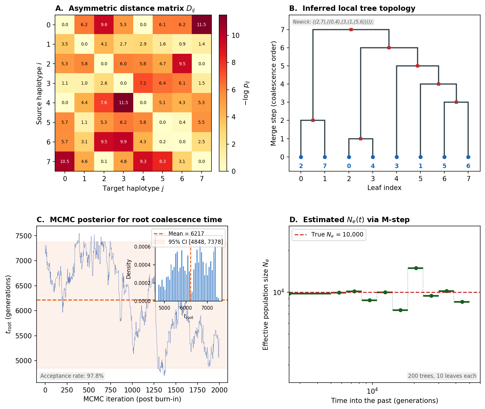

Overview of Relate
Before winding the mainspring, lay every gear on the bench and understand how they interlock.
{kind=link}

Relate at a glance. The four key gears of the Relate algorithm: Panel A – the asymmetric distance matrix heatmap at a focal SNP, measuring pairwise haplotype similarity. Panel B – tree topology built from the distance matrix via sequential nearest-neighbour joining. Panel C – MCMC posterior trace and density for a coalescence time, showing how branch-length estimation converges. Panel D – piecewise-constant \(N_e(t)\) estimated via the M-step, linking branch lengths back to population size history.
Relate (Speidel, Forest, Shi & Myers, 2019) estimates genome-wide genealogies for thousands of samples. Its defining design decision is the two-phase architecture: infer tree topologies first (fast, heuristic), then estimate branch lengths second (rigorous, MCMC). This separation makes Relate four orders of magnitude faster than ARGweaver while retaining comparable accuracy for coalescence time estimation.
This chapter lays out every component of the Relate movement before we begin assembly. If you have not yet read the Li & Stephens HMM, do so now – the modified copying model is the oscillator that drives Phase 1. You will also want familiarity with MCMC, since Relate’s branch length estimation relies on Metropolis-Hastings sampling.
What Does Relate Do?
Given a set of \(N\) phased haplotypes at \(L\) biallelic SNPs, Relate produces a set of local trees along the genome, each with estimated coalescence times (branch lengths):
Each local tree \(\mathcal{T}_i\) is a rooted binary tree describing the genealogical relationships among the \(N\) haplotypes over a contiguous genomic interval. The node times \(\mathbf{t}_i\) specify when each coalescence event occurred.
Confusion Buster – Haplotype vs. Diploid
A haplotype is a single copy of a chromosome. Diploid organisms (like
humans) carry two haplotypes per chromosome. Relate works on haplotypes, so
if you have 500 diploid individuals, you have \(N = 1000\) haplotypes.
The input data must be phased: the two haplotypes of each individual
must already be resolved (e.g., by SHAPEIT or Eagle). If your data is
unphased, you need to phase it before running Relate. The --effective_size
parameter in Relate refers to the haploid effective population size
(\(2N_e\) in diploid terms).
The Two-Phase Architecture
Relate’s core innovation is the clean separation of topology from timing:
Phase 1 – “Which gears mesh with which?”
For each SNP position, Relate identifies the tree topology: the branching structure that describes who is most closely related to whom. This is done by:
Running a modified Li & Stephens HMM (forward-backward) that produces an asymmetric distance matrix \(d(i,j)\) for each focal SNP
Feeding that matrix into a bottom-up tree-building algorithm that produces a rooted binary tree
The key innovation is the asymmetry: \(d(i,j) \neq d(j,i)\). The value \(d(i,j)\) approximates the number of derived alleles carried by haplotype \(i\) but not by haplotype \(j\). This directional information is essential for correct topology reconstruction – naively symmetrizing the distances produces incorrect trees.
Phase 2 – “When was each gear made?”
With tree topologies fixed and mutations mapped to branches, Relate estimates coalescence times using MCMC:
Likelihood: Under the infinite-sites model, the number of mutations on a branch is Poisson-distributed with rate proportional to branch length
Prior: The coalescent prior specifies the expected waiting time between coalescence events, given the effective population size
Sampling: Metropolis-Hastings proposes new coalescence times and accepts or rejects based on the posterior
This separation is not merely a computational convenience – it reflects a genuine statistical insight. The topology of a tree is a combinatorial object (which pairs coalesce), while the branch lengths are continuous parameters (when they coalesce). Jointly sampling both is a mixed discrete-continuous problem that scales poorly. By fixing the topology and sampling only the continuous parameters, Relate converts the problem into a standard MCMC on \(\mathbb{R}^{N-1}\).
Probability Aside – Why Decoupling Works
The posterior over genealogies factorizes approximately:
If the topology \(\mathcal{T}\) is well-determined by the data (many informative SNPs), then \(P(\mathcal{T} \mid \mathbf{D})\) is sharply peaked, and sampling from \(P(\mathbf{t} \mid \mathcal{T}, \mathbf{D})\) with \(\mathcal{T}\) fixed is a good approximation to the full posterior. The approximation degrades when the data is sparse (few SNPs per tree) or when multiple topologies have similar posterior probability. In practice, with dense SNP data (e.g., whole-genome sequencing), the topology is usually well-determined and the decoupling works well.
Terminology
Term |
Definition |
|---|---|
Haplotype matrix \(\mathbf{H}\) |
The \(N \times L\) matrix of allelic states (0 = ancestral, 1 = derived) |
Ancestral allele |
The allele present in the common ancestor (encoded as |
Derived allele |
The mutant allele (encoded as |
Painting |
Running the Li & Stephens HMM to compute posterior copying probabilities |
Asymmetric distance \(d(i,j)\) |
A directional measure: approximately the count of derived alleles in \(i\) that are ancestral in \(j\) |
Local tree |
The genealogical tree at a specific genomic position |
Coalescence time |
The time at which two lineages merge into a common ancestor |
Branch length |
The time interval spanned by a branch; equals the difference in coalescence times between parent and child node |
Infinite-sites model |
Each mutation occurs at a unique genomic position; no site mutates twice |
Metropolis-Hastings |
An MCMC algorithm that proposes parameter changes and accepts/rejects based on the posterior ratio |
Piecewise-constant \(N_e(t)\) |
Population size modeled as constant within time epochs, changing only at epoch boundaries |
Parameters
Relate takes the following parameters:
Parameter |
Symbol |
Meaning |
|---|---|---|
Mutation rate |
\(\mu\) |
Per-base-pair, per-generation mutation rate (e.g., \(1.25 \times 10^{-8}\)) |
Effective population size |
\(N_e\) |
Haploid effective population size (2x the diploid value) |
Recombination rate |
\(\rho\) |
Per-base-pair recombination rate (from the genetic map) |
Number of haplotypes |
\(N\) |
Number of input haplotype sequences |
Sequence length |
\(L\) |
Number of biallelic SNPs |
Seed |
– |
Random seed for MCMC reproducibility |
The population size matters more than you think
Unlike tsinfer (which barely uses population size), Relate is sensitive to
\(N_e\). The coalescent prior directly depends on it: a wrong
\(N_e\) shifts all coalescence times. If population size has changed
over time, use EstimatePopulationSize.sh to iteratively refine
\(N_e(t)\) jointly with the branch lengths.
The Flow in Detail
Haplotype matrix H (N x L)
+ Genetic map (recombination rates)
|
v
+---------------------------+
| Phase 1a: Painting |
| |
| For each haplotype i: |
| Run Li & Stephens |
| forward-backward |
| against all others |
| |
| For each focal SNP s: |
| p_ij(s) = posterior |
| copying probability |
+---------------------------+
|
| N x N asymmetric distance matrix at each SNP
v
+---------------------------+
| Phase 1b: Tree Building |
| |
| For each SNP: |
| Agglomerative |
| clustering using |
| asymmetric distances |
| |
| -> One binary tree per |
| genomic interval |
+---------------------------+
|
| Local tree topologies
v
+---------------------------+
| Mutation Mapping |
| |
| For each derived allele: |
| Place on the branch |
| that separates |
| carriers from |
| non-carriers |
+---------------------------+
|
| Trees with mutations on branches
v
+---------------------------+
| Phase 2: MCMC |
| |
| For each tree: |
| For each MCMC step: |
| Propose new t_k |
| Compute acceptance: |
| likelihood ratio |
| x prior ratio |
| Accept/reject |
+---------------------------+
|
v
.anc + .mut files (trees with dated nodes)
|
+---> EstimatePopulationSize.sh (iterative EM)
|
+---> SampleBranchLengths.sh (posterior samples)
|
+---> DetectSelection.sh (selection p-values)
|
+---> Convert to tree sequence (tskit format)
Complexity and Scalability
Relate’s computational cost is:
Phase 1 (painting + tree building): \(O(N^2 L)\) – for each of \(N\) haplotypes, the Li & Stephens forward-backward runs against the \(N-1\) others at \(L\) sites. The tree building at each SNP is \(O(N^2)\).
Phase 2 (MCMC): \(O(N \cdot L \cdot S)\) where \(S\) is the number of MCMC samples. Each MCMC step proposes a change to one node time, touching \(O(1)\) branches.
In practice, Relate processes ~10,000 haplotypes genome-wide on a compute cluster, four orders of magnitude faster than ARGweaver. The quadratic dependence on \(N\) is the bottleneck; methods like tsinfer (\(O(NL)\)) scale to larger \(N\) at the cost of statistical rigor.
Confusion Buster – ARG vs. Local Trees
Relate does not output a full ancestral recombination graph (ARG) in the
sense of ARGweaver or SINGER. It outputs a sequence of marginal local
trees, one per genomic interval between recombination breakpoints. These
trees are correlated (adjacent trees share most of their structure), but
Relate does not explicitly model the recombination events that connect
them. The .anc output file stores each tree independently, with shared
node indices providing implicit cross-tree correspondence. When converted
to a tskit tree sequence, the edges are shared where trees overlap,
recovering the correlated structure.
Theoretical Guarantees
Under the infinite-sites model, Relate’s Phase 1 (topology inference) is guaranteed to produce correct genealogies in three limiting cases:
No recombination: There is a single tree for the entire genome. The asymmetric distance matrix exactly encodes the number of mutations separating each pair, and agglomerative clustering recovers the true tree.
Very high recombination rate: Each SNP effectively has its own independent tree. The position-specific distance matrix at each focal SNP reflects only the local genealogy, and the tree-building algorithm recovers each local tree independently.
Intense, widely-spaced recombination hotspots: Trees change only at hotspot locations. Within each hotspot-free interval, the distance matrix is consistent with the single true tree.
Outside these limits, the accuracy degrades gracefully: the topology is approximate, with errors concentrated where the data is least informative (regions with few nearby SNPs, or where recombination has fragmented the genealogical signal).
Ready to Build
You now have the high-level blueprint. In the following chapters, we build each gear from scratch:
Gear 1: Asymmetric Painting – The modified Li & Stephens HMM and the asymmetric distance matrix
Gear 2: Tree Building – Bottom-up tree construction from asymmetric distances
Gear 3: Branch Length Estimation (MCMC) – Mutation mapping and MCMC estimation of coalescence times
Gear 4: Population Size Estimation – EM estimation of population size history
Each chapter derives the math, explains the intuition, implements the code, and verifies it works. The chapters build on each other: Gear 1 produces the distance matrices that Gear 2 consumes to build trees, Gear 3 dates those trees, and Gear 4 refines the population model that feeds back into Gear 3.
Let’s start with the first gear: Asymmetric Painting.